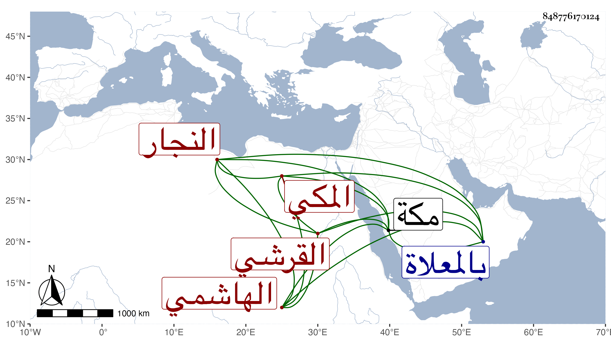

0902Sakhawi.DawLamic.ITO20230111-ara1.EIS1600.848776170124
Biography ID: 848776170124
920
عبد اللطيف بن محمد بن أحمد بن أبي بكر بن عبد الله بن علي بن سليمان ابن محمد بن أبي بكر القرشي الهاشمي المكي النجار أخو علي الآتي ويعرف بالغنومي بفتح المعجمة وتشديد النون نسبة بعض السنن لأبي داود ، وكذا سمع عليه وعلى أبي العباس بن عبد المعطي المالكي والفخر القاياتي الشفا بفوات لم يعين ، وأجاز له خلق منهم الأبارهيم ابن عبد الله بن عمر الصنهاجي وابن علي فرحون والابناسي وابن صديق وكذا العراقي والهيثمي والصردي وابن عرفة وابن حاتم والمليجي ، أجاز لي ، وكان أميا يتكسب بالتجارة ماهرا فيها . مات في المحرم سنة تسع وخمسين بمكة ، ودفن بالمعلاة رحمه الله .
